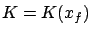
is present. To illustrate just one simple case, we suppose that we are dealing with a free-time, free-endpoint problem in the Mayer form, i.e., there is no running cost (
Since  , there is no need to consider the
, there is no need to consider the  -coordinate. Temporal and spatial control
perturbations can be used to construct the terminal cone
-coordinate. Temporal and spatial control
perturbations can be used to construct the terminal cone  as
before, except that it now lives in the original
as
before, except that it now lives in the original  -space:
-space:
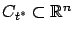
. By optimality, and since the terminal state is free, no perturbed state trajectory can have a terminal cost lower than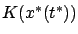
, the terminal cost of the candidate optimal trajectory. Thus we expect that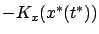
, which we henceforth assume to be a nonzero vector. A comparison of (4.42) with (4.29) unmistakably suggests that we should define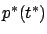
the inequality (4.42) matches (4.29), following which the adjoint equation and the analysis of the HamiltonianThe above argument is of course not rigorous, so let us again validate our conjecture by formally reducing the present scenario to the Basic Variable-Endpoint Control Problem. A transformation that accomplishes this goal is provided by the formula
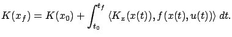
Ignoring
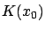
which is a known constant, we arrive at an equivalent problem in the Lagrange form with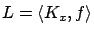
. For this modified problem, the Hamiltonian is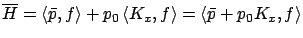
where is the costate. Applying the maximum principle, we obtain the differential equation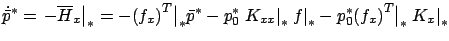
with the boundary condition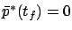
. The latter tells us, by the way, that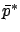
to have been normalized so that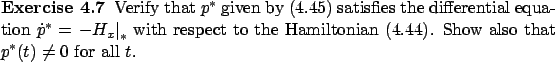
By construction,  is maximized and equals 0 along the optimal
trajectory because these properties hold for
is maximized and equals 0 along the optimal
trajectory because these properties hold for
 . We
thus conclude that the statement of the maximum principle for the
present case, with respect to the Hamiltonian (4.44), is
obtained from that for the Basic Variable-Endpoint Control Problem
by eliminating
. We
thus conclude that the statement of the maximum principle for the
present case, with respect to the Hamiltonian (4.44), is
obtained from that for the Basic Variable-Endpoint Control Problem
by eliminating  and changing the transversality condition
to
and changing the transversality condition
to
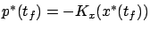
. Recall that we already saw such a boundary condition for the costate in (3.37).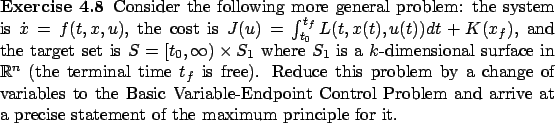